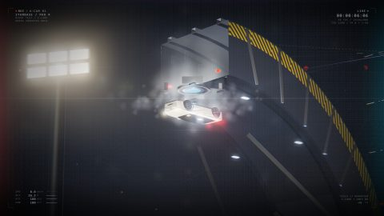
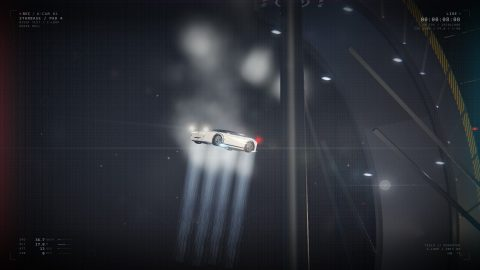
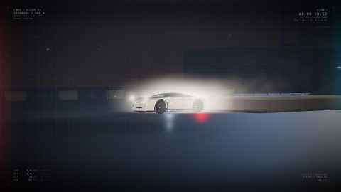
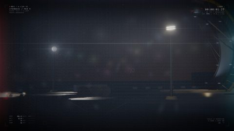

PROCEDURAL FILM · 2026
夜间测试场，一辆白色 Roadster 冲上巨型 C 形钢构坡道，在倒置顶点被车底风扇吸住倒挂悬停一秒，随后冷气反推缓降、完成 180° 横滚、白雾缓冲、四轮接地。
16.0s / 1080p30 / H.264 + AAC 立体声。点播放即看，视频为本地文件，不需要联网。
没有拍摄、没有素材库、没有外部模型或音效文件。整个场景、光学效果和声音，都是代码一行一行生成出来的。
01场景：从零搭一个夜间测试场
C 形钢构坡道、5 组工业泛光灯、粒子尘雾、62k 三角面的车身，全部在 Three.js 里用几何体和材质堆出来。没有导入任何外部模型、贴图或视频素材——所以它可以在任何分辨率下重渲，永远不会有「素材不够用」的问题。
02渲染管线：确定性逐帧
设计了一条 renderFrame(t) 时间轴，给定任意时刻 t 就能算出该帧的完整画面。配合 headless Chrome 逐帧合成截图，再用 WebCodecs 编码封装成 H.264/AAC。480 帧约 3 分钟出片，改一处参数整片重渲，不存在「剪到一半发现某镜头要重拍」。
03光学层：SVG 做镜头语言
变形光斑、鬼影、镜头污渍、直播式 HUD，全部用 SVG 绘制后叠在 3D 画面上。这一步决定了它「像实拍」而不是「像游戏录屏」——真实镜头的瑕疵（污渍、眩光、色散）才是可信感的来源。
04声音：14 层原创设计
风扇低频、冷气脉冲、轮胎落地、金属共振等 14 层音效由 DSP 合成，母带混到 −16.1 LUFS / 真峰值 −1.3 dBTP / 0 削波。没有任何一段来自音效库。
整片的技术难点集中在这四个瞬间——每一个都是「物理上要成立」才敢剪进去的。




这条片子和「内容运营」有什么关系
它不是靠素材堆出来的片子，而是把一个内容需求拆成可执行的技术方案：要什么画面 → 用什么方式生成 → 怎么保证每一帧可控 → 怎么让声音和画面咬合。
这和我做内容运营时的动作是同一套逻辑：先定验收标准，再选工具，最后把过程固化成可复用的流程。区别只是这次的「素材」是代码，「成片」是 16 秒。
这条片子是 vibecoding 完成的：代码由 AI 模型（DeepSeek-V4.1-Flash·1017）生成，但每一个镜头要什么、节奏多快、光从哪来、声音分几层、哪一版不对要返工——这些是人的判断。模型负责把它写出来，我负责决定写成什么。
这也是我认为 AI 内容生产的正确姿势：不是「让 AI 做一条片子」，而是「我说清楚要什么，AI 帮我把它造出来，我验收」。验收标准在我这边，这是不能被让渡的部分。